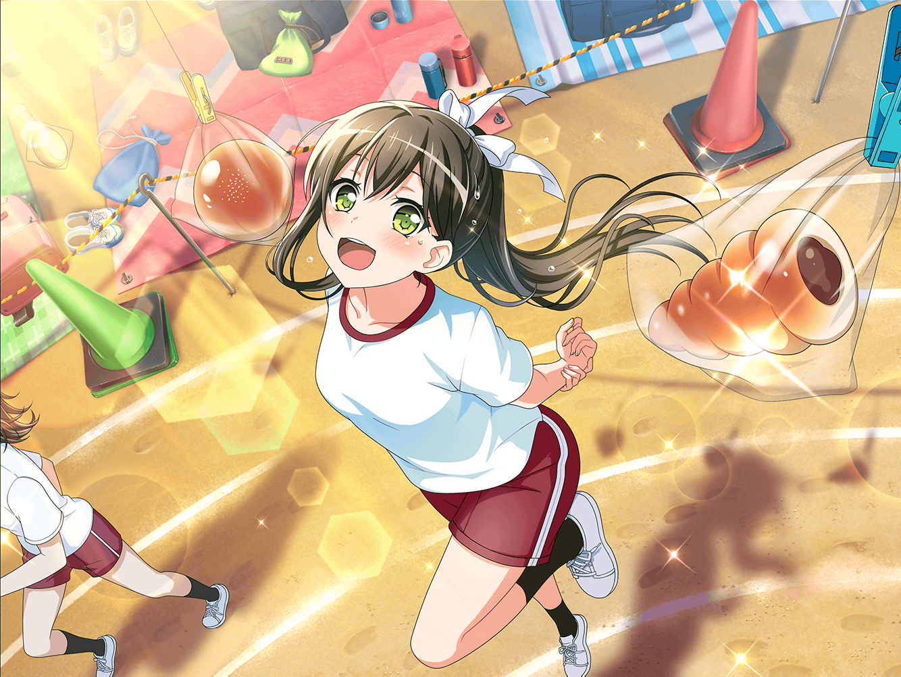

花咲川女子学園 グラウンド 白組陣地
香澄
おっひる～おっひる～！
さーて、今日のお弁当はなにかなー♪
香澄
ねえねえ、せっかくだから
みんなのお弁当見せあいっこしようよ！
りみ
う、うん、そうしようか
たえ
じゃあ、私から。
私のお弁当は……はい
香澄
うさぎのおにぎりに、うさぎのウインナー、
うさぎのにんじんにうさぎのりんご！
りみ
おたえちゃんのお弁当すごいね……
全部、うさぎの形になってる
美咲
本当だ……見事にうさぎばっかりだねー
香澄
か、かわいいー！
おたえのお弁当、すっごーくかわいいよ！
たえ
うん、だってうさぎだから
美咲
……ねえ、ちょっと思ったんだけど、
うさぎ好きの花園さんが、うさぎのお弁当……
それ、本当に食べるの？
たえ
もちろん、そのつもりで作ってきたよ
美咲
あー、そっか。それならいいんだけど……
香澄
美咲ちゃん！
次、美咲ちゃんのお弁当見せて！
美咲
あたしのは別に……ごく普通のお弁当なんで。
みなさんのご期待に添えるようなものじゃないから
香澄
……あれ？
美咲ちゃん、ちょっとテンション低くない？
美咲
そうかな？
いつもこんな感じだけど……？
香澄
あ、そっか！
そういえば白組にはハロハピのメンバーいないもんね！
それは寂しくなって当然だよっ！
美咲
べ、別に寂しくないって……
ぶっちゃけ静かで楽だから
美咲
むしろ、３バカがいないおかげで
戸山さん達と話せる機会ができたから
よかったなって
美咲
今まで同じ学校だったのに、
あまり喋った記憶もないし
りみ
確かに……
廊下ですれ違ったら挨拶するぐらいだったかも
香澄
そっか！
それじゃあ、今日はいーっぱいお喋りしようね！
美咲
え、あ、いや……
それもいいけど、お弁当を……
たえ
せっかくだし、今度一緒に遊ぼう。
みんなでどこか行こうよ
香澄
さんせーい！
私と、おたえとりみりんと美咲ちゃんで！
どこ行く？ どこ行く？
りみ
遊べる場所がいいよね。
遊園地とか、そういうところ……？
香澄
遊園地！ いいじゃん、遊園地！
コーヒーカップに乗って、メリーゴーランドに乗って、
ジェットコースターに乗ろう！
香澄
えへ～、早く行きたいな～♪
りみ
か、香澄ちゃん。
私はジェットコースターはちょっと……
美咲
（……この人達、人の話、全く聞いてない。
これじゃあ、あの３バカと変わらない……）
たえ
そういえば、最近近くにオープンした遊園地、
バンジージャンプもできるみたい
りみ
ば、バンジージャンプ！？
香澄
空を飛べるの！？
わーい、やった～！
美咲ちゃん、一緒にビヨヨヨーンって空を飛ぼう！
美咲
は、はあ……もし予定が合えば……
美咲
（このメンバーで遊園地に行ったら、
クタクタになるよ、絶対……）
りみ
えっと、香澄ちゃん、
遊園地もいいと思うけど、
まずは近場で遊ばない？
たえ
近場……カラオケとか？
香澄
おおー！ カラオケ、いいね！
おたえナイスアイディア！
美咲
（たぶん遊べれば、どこでもいいんだろうな……）
りみ
カラオケか……ちょっと緊張しちゃうな。
私、あまり歌えないし……
香澄
そんなことないよー！
りみりん、ちゃんと歌えるじゃん！
香澄
……ってことで、美咲ちゃん！
まずは、カラオケから！
どう？
美咲
えーと、うん……わかった
香澄
うん、いいよいいよ！
楽しみー！
たえ
じゃあ、早速今日の帰りに行こうか？
体育祭の打ち上げ的な
美咲
え、いきなり今日っていうのは……
りみ
わ、私も別の日がいいな。
今日だと疲れて歌えなそうだし……
香澄
え～……わかった。
じゃあ、また改めていつ行こうか決めようね！
香澄
美咲ちゃんとの初カラオケ楽しみ～！
美咲
まあ、楽しみにされるほど、
カラオケ上手じゃないんだけどね
美咲
と、それよりもそろそろお弁当食べよ？
昼休憩、終わっちゃうよ
香澄
そうだね！
いただきまーす！
たえ
…………
美咲
花園さん？
どうしたの、お弁当ジッと見て。
食べないの？
たえ
うん。うさぎづくしにしたら食べられなくて。
どの子もかわいいから
美咲
（やっぱりこうなったか……）